Multiple Jenkins Masters
with Jenkins Gearman Plugin
Gearman Plugin
- Openstack Infrastructure
-
- Motivation
-
- How It Works
-
- Demo
-
- In Production
-
OpenStack

Openstack is open source software for building private and public clouds
Projects
- Servers
- nova (compute)
- swift (object storage)
- glance (image service)
- keystone (identity service)
- neutron (network service)
- cinder (volume service)
- heat (orchestration)
- ceilometer (measurement)
- horizon (dashboard)
- trove (databases)
- ironic (bare metal)
- Client libraries
- python-novaclient
- python-swiftclient
- python-glanceclient
- python-keystoneclient
- python-neutronclient
- python-cinderclient
- python-heatclient
- python-ceilometerclient
- python-openstackclient
- python-troveclient
- python-ironicclient
Contributors

- Unaffiliated individuals
- Commercial entities
- Nonprofit organizations
- National and local governments
- Number, quality, and area of contributions can change daily
- ~1000 active contributors
Gerrit Events (per hour)
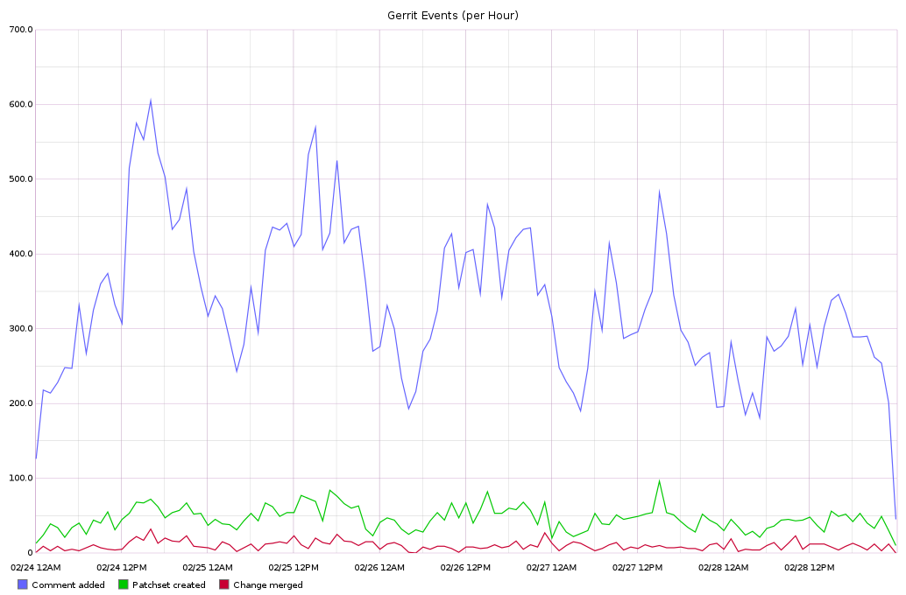
Zuul Jobs (per hour)
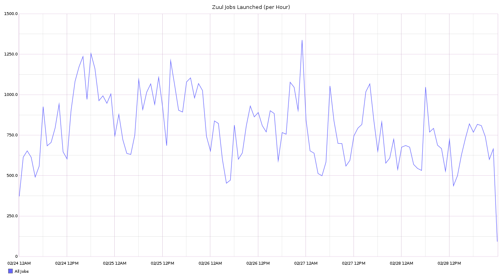
Jenkins Slave Usage
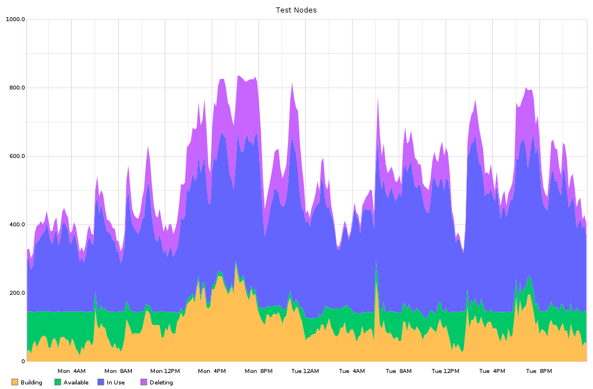
Openstack CI Tools
- Code review and VCS
- Git (SCM)
- Gerrit (Code Review)
- Test/Build automation
- Jenkins (CI)
- Jenkins Job Builder (CI project creator)
- Zuul (CI gate keeper)
- Gearman (CI gate keeper)
- Nodepool (Cloud VM manager)
- Devstack (Cloud Test VMs)
- LogStash (Build/Test log indexer)
Zuul for Preemptive CI
- Ensures Code Quality
- Protects developers
- Devs always start from working code
- Protects tree
- Egalitarian
- Process is the same for everyone
- Process is transparent
- Process is automated
Zuul Simulation
Architecture (Before)
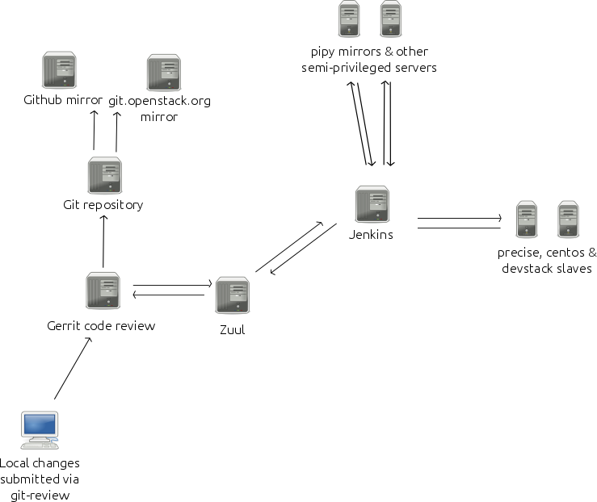
Architecture (Before)
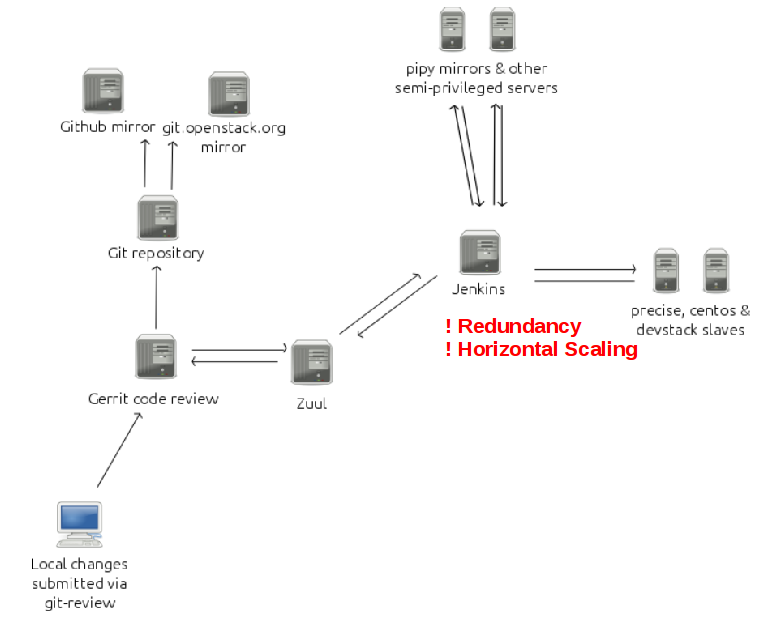
Architecture (Now)
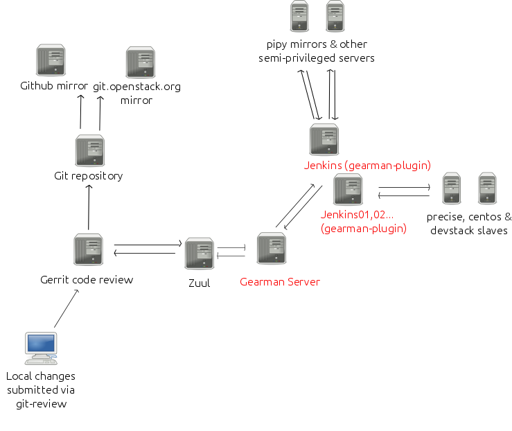
Gearman

Gearman is a distributed job queuing system designed to distribute appropriate
computer tasks to multiple computers, so large tasks can be done more quickly.
Horizontal Scaling
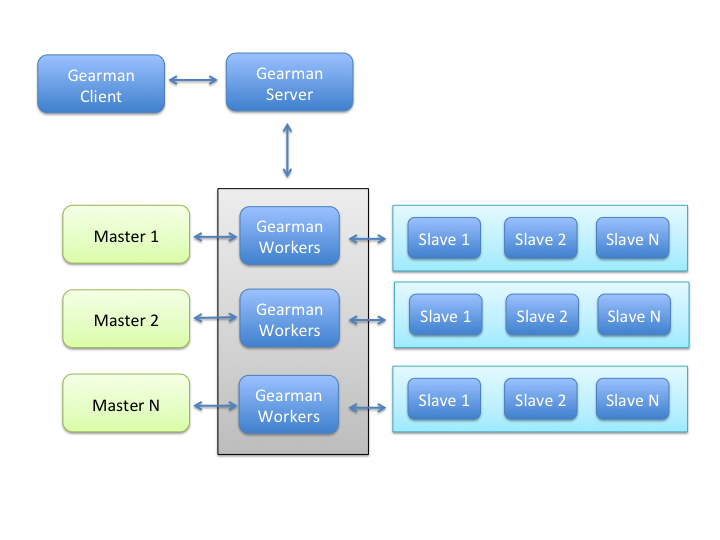
Redundant Jenkins
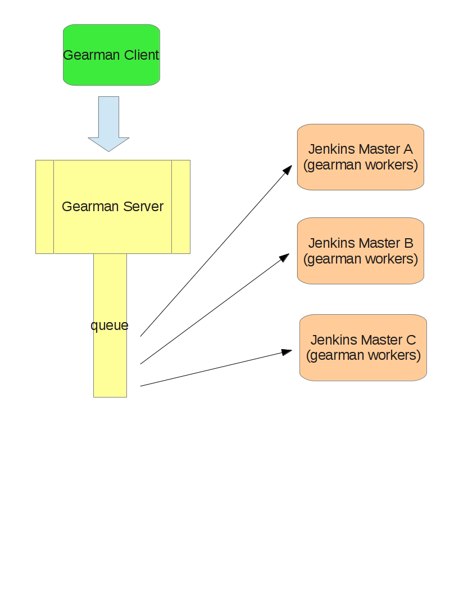
Gearman Features
- Gearman plugin reloads on jenkins restart: meaning that when jenkins restarts the gearman worker threads are automatically restarted and reconnect to a gearman server.
- High availability(ish). When one master goes down the other master(s) will continue to execute builds however the in flight jobs on the down master will be lost.
- Horizontal scalability. Just continue to add more jenkins masters to distribute the load between masters
- Slaves are always shared between masters. Offline or disconnect a slave will un-share it
- Gearman jobs can start a jenkins build
- Gearman jobs can stop or abort a jenkins build
- Gearman jobs can change a build description
- Gearman jobs can pass in parameters to jenkins builds
- Gearman jobs can automatically set a slave to offline after running a build
- Gearman plugin is aware of Jenkins project status: meaning that gearman will register/unregister projects when the project is enabled or disabled.
- Gearman plugin is aware of slave status: meaning that gearman will register/unregister slaves when a slave is set online/offline and connected/disconnected.
Gearman-Jenkins Integration
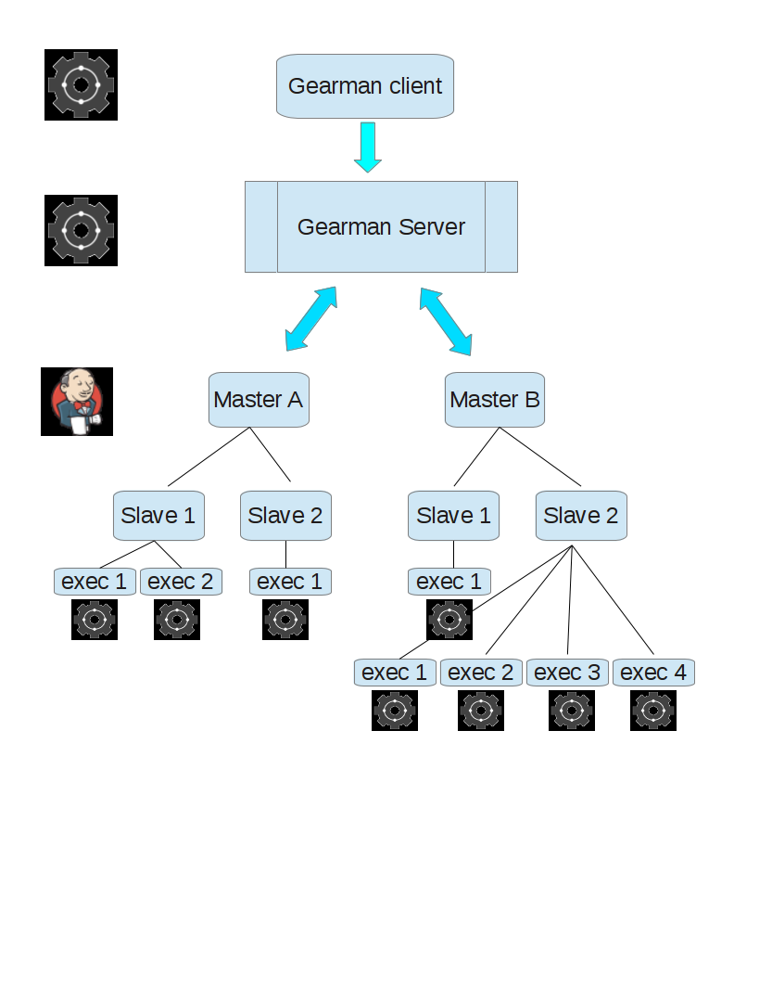
Jenkins Buildables as Gearman Functions
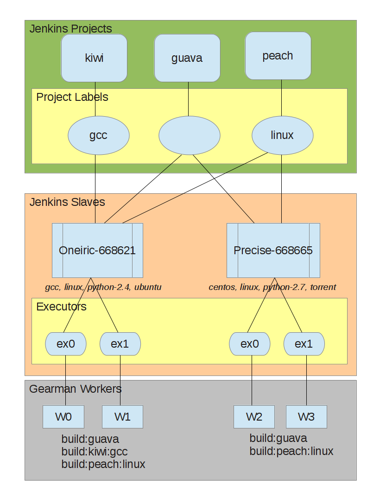
Gearman Plugin Architecture
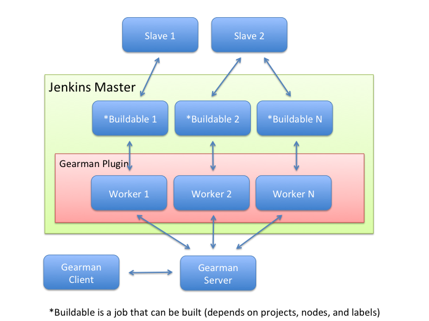
Gearman Plugin in Production
Everything Is Automated